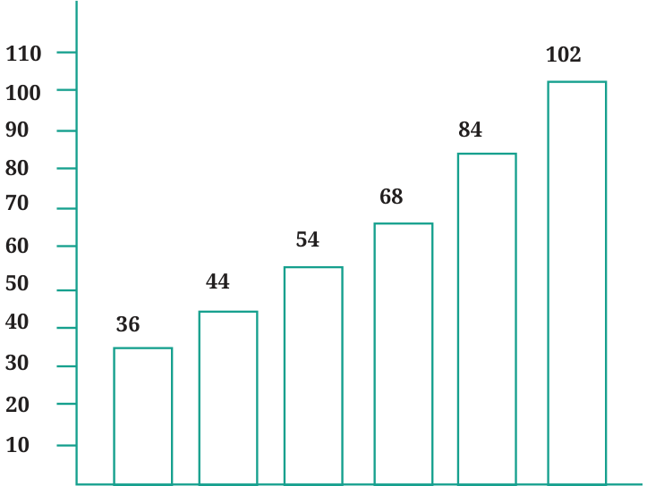

<!DOCTYPE html>
<html lang="en">
<head>
<meta charset="UTF-8">
<meta name="viewport" content="width=device-width,initial-scale=1">
<title>Figure it Out — Data Handling and Presentation</title>
<meta name="description" content="Class 6 Mathematics · Data Handling and Presentation · Figure it Out">
<link rel="icon" href="data:image/svg+xml,<svg xmlns='http://www.w3.org/2000/svg' viewBox='0 0 100 100'><text y='.9em' font-size='90'>📘</text></svg>">
<link rel="stylesheet" href="../../../assets/book.css">
<link rel="stylesheet" href="https://cdn.jsdelivr.net/npm/katex@0.16.11/dist/katex.min.css" crossorigin="anonymous">
</head>
<body>
<header class="topbar">
<div class="topbar-in">
  <div class="crumb">
    <span class="c1"><a href="../../../index.html">Library</a> · <a href="../../index.html">Class 6 Mathematics</a></span>
    <span class="c2">Data Handling and Presentation · Figure it Out</span>
  </div>
  <a class="tb-btn" data-nav="prev" href="../../04-data-handling-and-presentation/08-bar-graphs-4.3/index.html" title="4.3 Bar Graphs">←</a>
  <details class="drawer"><summary class="tb-btn" title="Sections in this chapter">☰</summary>
<div class="drawer-panel"><div class="dh">Data Handling and Presentation</div><a href="../01-chapter-opener/index.html">Chapter opener; 4.1 Collecting and Organising Data</a><a href="../02-figure-it-out/index.html">Figure it Out</a><a href="../03-figure-it-out/index.html">Figure it Out</a><a href="../04-figure-it-out/index.html">Figure it Out</a><a href="../05-pictographs-4.2/index.html">4.2 Pictographs</a><a href="../06-drawing-a-pictograph/index.html">Drawing a Pictograph</a><a href="../07-figure-it-out/index.html">Figure it Out</a><a href="../08-bar-graphs-4.3/index.html">4.3 Bar Graphs</a><a href="../09-figure-it-out/index.html" aria-current="page">Figure it Out</a><a href="../10-drawing-a-bar-graph-4.4/index.html">4.4 Drawing a Bar Graph</a><a href="../11-figure-it-out/index.html">Figure it Out</a><a href="../12-artistic-and-aesthetic-considerations-4.5/index.html">4.5 Artistic and Aesthetic Considerations</a><a href="../13-figure-it-out/index.html">Figure it Out</a><a href="../14-infographics/index.html">Infographics</a><a href="../15-summary/index.html">Summary</a><a href="../16-solutions/index.html">CHAPTER 4 — SOLUTIONS</a></div></details>
  <a class="tb-btn" data-nav="next" href="../../04-data-handling-and-presentation/10-drawing-a-bar-graph-4.4/index.html" title="4.4 Drawing a Bar Graph">→</a>
  <button class="tb-btn" data-theme-toggle title="Toggle light / dark" aria-label="Toggle light or dark theme">◐</button>
</div>
<div class="progress"><span style="width:36.6%"></span></div>
</header>
<main class="wrap">
<div class="sec-head">
  <p class="eyebrow"><a href="../index.html">Chapter 4 · Data Handling and Presentation</a></p>
  <h1>Figure it Out</h1>
  <p class="sec-meta">Textbook pages 15–16 · 2 figures</p>
</div>
<article class="prose">
<ol>
<li>How many total cars passed through the crossing between 6 a.m. and noon?</li>


<li>Why do you think so little traffic occurred during the hour of \(6 - 7\) a.m., as compared to the other hours from 7 a.m. - noon?</li>


<li>Why do you think the traffic was the heaviest between \(7 - 8\) a.m.?</li>
<li>Why do you think the traffic was lesser and lesser each hour after 8 a.m. all the way until noon?</li>
</ol>
<h4 class="callout-h" id="s-example">Example:</h4>
<figure class="fig"></figure>

<p>Population of India in crores</p>
<p>This bar graph shows the population of India in each decade over a period of 50 years. The numbers are expressed in crores. If you were to take 1 unit length to represent one person, drawing the bars will</p>
<p>be difficult! Therefore, we choose the scale so that 1 unit represents 10 crores. The bar graph for this choice is shown in the figure. So a bar of length 5 units represents 50 crores and of 8 units represents 80 crores. •• On the basis of this bar graph, what may be a few questions you may ask your friends? •• How much did the population of India increase over 50 years? How much did the population increase in each decade?</p>
</article>
<nav class="pager"><a class="" data-nav="prev" href="../../04-data-handling-and-presentation/08-bar-graphs-4.3/index.html"><span class="dir">← Previous</span><span class="t">4.3 Bar Graphs</span><span class="ch">Data Handling and Presentation</span></a><a class="nx" data-nav="next" href="../../04-data-handling-and-presentation/10-drawing-a-bar-graph-4.4/index.html"><span class="dir">Next →</span><span class="t">4.4 Drawing a Bar Graph</span><span class="ch">Data Handling and Presentation</span></a></nav>
</main><footer class="site">Generated from the source textbook PDFs · text, figures and exercises belong to their respective publishers.</footer><script defer src="https://cdn.jsdelivr.net/npm/katex@0.16.11/dist/katex.min.js" crossorigin="anonymous"></script>
<script defer src="https://cdn.jsdelivr.net/npm/katex@0.16.11/dist/contrib/auto-render.min.js" crossorigin="anonymous"
  onload="renderMathInElement(document.body,{delimiters:[
    {left:'\\(',right:'\\)',display:false},
    {left:'$$',right:'$$',display:true},
    {left:'\\[',right:'\\]',display:true}],throwOnError:false,ignoredTags:['script','noscript','style','textarea','pre','code']})"></script>
<script src="../../../assets/book.js"></script>
<script defer src="../../../../assets/search.js?v=1789782771"></script>
<script defer src="../../../../assets/screenshot.js?v=2"></script>
</body>
</html>
